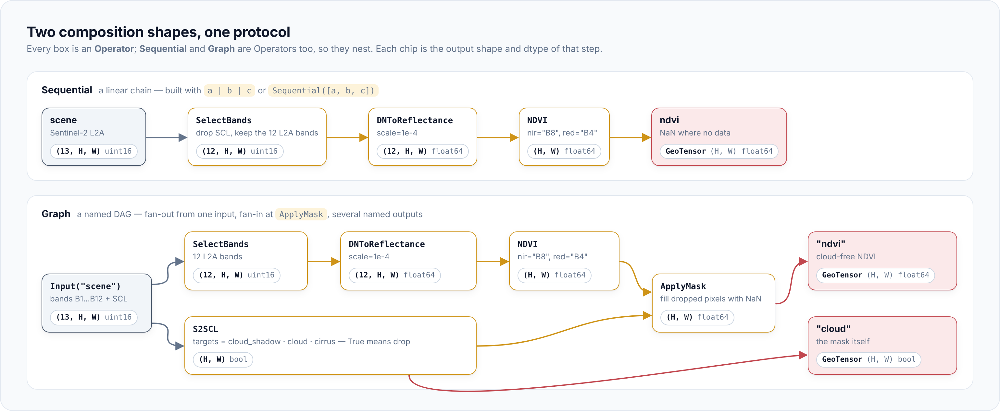
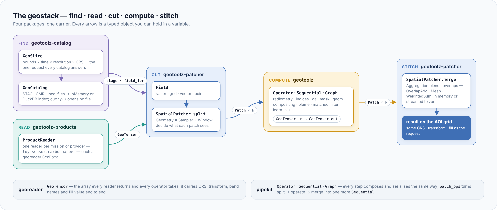

Concepts¶
Every step in a geotoolz pipeline is an Operator, and every pipeline is
an operator built from smaller ones. This page explains that model and
the rules every operator keeps. The how-tos put it to work:
define an operator and
branching pipelines.
The Operator¶
An Operator is a callable with a keyword-only constructor and an
_apply method. The base class comes from
pipekit, which knows nothing
about rasters; geotoolz operators narrow it to GeoTensor and ndarray.
| The base class gives you | What it does |
|---|---|
__call__ |
On a value, runs _apply now. On an Input or Node, records a graph node instead. |
a \| b |
Builds a Sequential. |
get_config() |
JSON of the constructor arguments, derived from __init__. Drives __repr__, op.state and YAML round-trips. |
Operator.from_state(op.state) |
Rebuilds an equal operator from that JSON. |
Two class flags change how an operator composes:
forbid_in_yaml = Truemarks an operator that holds a live object (a callable, model, estimator or open handle). Its config is a debug repr, andfrom_staterefuses to rebuild it.Tap,Lambda,Branch,Switch,SinkandModelOpcarry it._terminal = Truemarks an operator that returns something other than a carrier, such asNoneafter a write.Sequentialaccepts it only as the last step. The writersWriteGeoTIFF,WriteCOGandWriteZarrare terminal;Sinkis not, because it returns its input.
Writing your own, with the full set of rules and a contract test, is Define an operator.
Sequential and Graph¶

Sequentialthreads each output into the next operator.a | b | candSequential([a, b, c])build the same thing, and|flattens nested chains into one list.Graphrecords a DAG when you call operators onInputplaceholders. It returns a dict keyed by output name. It sorts the nodes when built, so cycles and unreachable inputs fail before any data runs, and each node runs once.
Both are operators, so a Graph can sit inside a Sequential and the
other way round. The landing-page quickstart builds
the pipeline in the picture.
Execution is eager: calling an operator on a value runs it. The only
deferred step is graph recording, and the finished Graph runs eagerly
too. For chunked, lazy arrays, put a dask.array inside the carrier.
Choose a composition shape¶
| You want… | Use | Decided |
|---|---|---|
| a single chain of steps | Sequential or a \| b |
when you write it |
| named intermediates, branches, fan-in, several outputs | Graph |
when you write it |
| one input, many named outputs | Fanout |
when you write it |
| a two-way fork on the whole carrier | Branch(predicate, if_true, if_false) |
at run time |
| N-way dispatch keyed off an attribute (sensor, level) | Switch(key, cases, default) |
at run time |
| a side effect that keeps the carrier flowing | Sink |
at run time |
Branch and Switch look at the whole carrier, not at pixels. For
per-pixel choices use a mask and ApplyMask. Worked examples of each
shape are in Branching pipelines.
Observers and building blocks¶
Observers return their input unchanged, so they drop into any chain.
| Operator | What it does |
|---|---|
Tap(fn) |
Calls fn(x) and passes x on. |
Snapshot() |
A controller: snap.at("key") is a step that stores x in snap.captures["key"]. |
ShapeTrace() |
Prints shape and dtype at each step; mode="diff_only" skips repeats. |
Identity() |
A no-op, for any slot that needs an operator. |
Const(value) |
Returns value whatever the input. |
Lambda(fn) |
Wraps a plain function as an operator. |
import numpy as np
import geotoolz as gz
rng: np.random.Generator = np.random.default_rng(0)
dn: np.ndarray = rng.integers(200, 4000, size=(4, 32, 32), dtype=np.uint16) # (4, 32, 32) uint16
shapes: list[tuple[int, ...]] = []
snap: gz.Snapshot = gz.Snapshot()
pipeline: gz.Sequential = (
gz.DNToReflectance(scale=1e-4) # (4, 32, 32) uint16 → (4, 32, 32) float64
| gz.Tap(lambda x: shapes.append(x.shape))
| snap.at("reflectance")
| gz.NDVI(red=2, nir=3) # (4, 32, 32) float64 → (32, 32) float64
)
ndvi: np.ndarray = pipeline(dn) # (4, 32, 32) uint16 → (32, 32) float64
reflectance: np.ndarray = snap.captures["reflectance"] # (4, 32, 32) float64
assert shapes == [(4, 32, 32)]
The plain array in gives a plain array out. pipekit also ships Profile,
Histogram, Cache, Retry, Try and the Assert* checks; see the
pipekit docs.
Multi-input operators¶
An operator that combines several carriers takes every carrier as a
positional _apply argument. Constructor arguments hold only
configuration, which is what lets a Graph wire carriers in.
| Kind | Call | In a Graph |
|---|---|---|
| Two carriers | IMEEstimate(wind_speed=3.5)(kg_m2, plume_mask) |
IMEEstimate(wind_speed=3.5)(Input("enh"), Input("mask")) |
| Optional second carrier | SBMP()(scene, reference_scene) or SBMP()(scene) |
SBMP()(Input("scene"), Input("ref")) |
| N-ary reducer | CombineMasks()(m1, m2) or CombineMasks()([m1, m2]) |
CombineMasks()(Input("a"), Input("b")) |
- Primary carrier first. The output is wrapped like the first
argument:
ApplyMask()(data, mask),dNBR()(pre, post),RasterToRasterLike()(src, like). - N-ary reducers take many positional carriers or one list:
CombineMasks,CutMix(gt, *pool), thecompositingoperators,StackMatched,BlendMatched. - Mask-producing operators stay configuration.
ApplyMask(mask=BBoxMask(...))runs the mask operator on its input; mask carriers are passed at call time. - Grid templates are the exception.
ReprojectLike(like=...),Georeference(glt=...)andHistogramMatch(reference=...)pin a template, not a pixel-aligned input.
Georeferencing checks¶
Every family uses the helpers in geotoolz.carrier, so the errors read
the same everywhere.
- Geo-dependent operators (reprojection, rasterising, metre-based measures) reject a plain array with one message naming the operator.
- Multi-input operators require one pixel grid: equal
(H, W), and for GeoTensors an equal CRS and an exactly equal transform. There is no tolerance, because sub-pixel drift is a real source of bugs. - Per-pixel reductions over a stack (the
compositingoperators) also require the band axis to match. Plain arrays compare shape only.
Band names¶
Every operator that takes a band reference resolves it with
geotoolz.carrier.resolve_band, so "B4" means the same band in every
family.
- Integers are positions on the band axis and work on any carrier.
- Strings are looked up in
attrsunderband_names, thendescriptions, thenbands; the first key that has the name wins. A key holds a list of names or a{name: index}mapping. - geotoolz writes only
band_names; the other two keys are read for rasterio and other producers. - A string on a plain
ndarrayraisesTypeError. A name missing from a GeoTensor raisesValueError. The one exception isplume.SBMP, which maps its"B11"/"B12"defaults onto a plain 12-band L2A array.
Mask polarity¶
Every masking mask uses one polarity: True = drop the pixel.
Producers (qa, mask, restore.OutlierMask) and consumers
(ApplyMask, CombineMasks) agree on it (decision record #154).
- Region masks choose a side with
keep=.PolygonMask,BBoxMask,LandMask,AltitudeMaskand the other region masks takekeep="inside"(the default) orkeep="outside".ApplyMask(mask=BBoxMask(bounds=aoi))keeps the AOI. - Consumers have no
invert=switch. Flip a keep-polarity mask, such as georeader'svalidmask(), withInvertMask. - Detections mark the feature. Feed a segmentation or plume mask to
ApplyMaskto drop the feature, or throughInvertMaskto keep it. - Morphology is polarity-neutral.
DilateMask,BufferMaskandRemoveSmallObjectschange theTruepixels whatever they mean.
Fitted operators¶
Some operators learn state from data: the normalize scalers,
matched_filter.MatchedFilter, restore.MNF and learn.SklearnOp.
They share one contract (decision record #143) and satisfy
pipekit.protocols.FittableTransformer.
| Method | Does |
|---|---|
fit(x) -> self |
Learns state into trailing-underscore attributes (mean_, std_, cov_op_). |
transform(x) |
Applies the state. Never fits or mutates; raises ValueError when unfitted. |
inverse(x) |
Undoes transform where that makes sense (the scalers, MNF). |
op(x) |
Calls transform, fitting first when configured to learn on call. |
import numpy as np
import geotoolz as gz
rng: np.random.Generator = np.random.default_rng(0)
train: np.ndarray = rng.normal(0.2, 0.05, size=(4, 32, 32)) # (4, 32, 32) float64
scene: np.ndarray = rng.normal(0.2, 0.05, size=(4, 32, 32)) # (4, 32, 32) float64
scaler: gz.StandardScaler = gz.normalize.StandardScaler().fit(train)
normed: np.ndarray = scaler(scene) # (4, 32, 32) float64 → (4, 32, 32) float64
restored: np.ndarray = scaler.inverse(normed) # (4, 32, 32) float64 → (4, 32, 32) float64
mnf: gz.MNF = gz.restore.MNF(n_components=2).fit(scene)
denoised: np.ndarray = mnf.inverse(mnf(scene)) # (4, 32, 32) → (2, 32, 32) → (4, 32, 32) float64
- Fitted state is never configuration.
get_config()mirrors the constructor, somean_stays out of it. To persist a fit, pass it back:StandardScaler(mean=s.mean_, std=s.std_). Normalise for training and inference shows the full round trip. - Learning on call.
fit_on_call=True(scalers), an unfittedMNFandSklearnOp(fit_mode="fit_on_call")fit on the first call and reuse that state.MatchedFilter(fit_on_call=True)is the per-scene exception and stores nothing. - Thread safety.
transformis read-only, so a fitted operator can be shared acrosspipekit.ThreadMapworkers. A first-call fit runs once under a lock, but which item it sees depends on timing. Callfit(x)before parallel use when the result must be deterministic. - Pre-trained models.
learn.ModelOpwraps a trained model and never fits. It returns the model's output as it is, without rewrapping it.
Where geotoolz fits¶

geotoolz is the compute stage. It sees only GeoTensors, so it does not
care which catalog or reader produced them. The seams are on
How the packages interlock; the patcher bridge is
Tile → operate → stitch.
Further reading¶
- Define an operator and branching pipelines.
- Core API and carrier helpers.
- Notebooks in the research_notebook geostack project: composition core, pipeline idioms, deployment shapes.